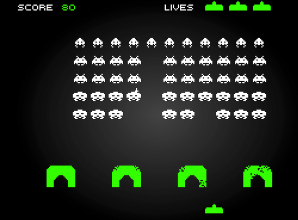

Projets
SPACE INVADERS
 apqrn5
Tu es prêt à coder ton premier jeu ?
Un truc bien vintage , avec juste quelques couleurs, et un module de python qui va te faciliter la tache , Pyxel.
Débuter
Voici le lien pour une documentation complète du module pyxel
On y retrouve par exemple les couleurs possibles  et le numéro à utiliser pour les obtenir.
et le numéro à utiliser pour les obtenir.
On va travailler en ligne sur le site https://www.pyxelstudio.net
Une fois le site chargé:
- Vous cliquez sur Create
- Vous enregistrez le lien qui vous est donné pour pouvoir retroucver votre travail
- Vous allez coder dans la fenêtre de gauche , sous import pyxel
- Et vous codez le jeu de space invaders

Le début du jeu: Fixer la fenêtre et dessiner un vaisseau.
Il y a dans notre progamme deux fonctions très importantes : draw et update ...la première dessine et la seconde met à jour .
Donc , on fixe notre cadre, on place notre vaisseau dans le cadre en le dessinant (hyper basiquement, ne revez pas ! ), on le fait bouger et ...c'est déjà pas mal !
Voici l'exemple 1 donné par la documentation:
import pyxel
pyxel.init(160, 120) # on crée une fenêtre de 160 par 120
def update():
if pyxel.btnp(pyxel.KEY_Q): # appuyer sur la touche Q fait quitter
pyxel.quit()
def draw():
pyxel.cls(0) # on efface
pyxel.rect(10, 10, 20, 20, 11) # on dessine un carré de coté 20 au point de coordonnées (10,10), couleur 11 soit vert clair.
pyxel.run(update, draw) # on met à jour , on dessine .
A l'aide cet exemple :
-
Créer une fenêtre carrée de 128 de coté
-
Créer deux variables vaisseau_x et vaisseau_y et leur affecter à chacune une abscisse et une ordonnée (entre 0 et 128
) -
Créer une fonction deplacement_vaisseau donc voici la documentation
def deplacement_vaisseau (x,y):
""" Cette fonction permet de dpélacer la position du vaisseau:
On utilisera la touche gauche (KEY_LEFT) pour aller vers la gauche, et les touches KEY_RIGHT, KEY_UP,KEY_DOWN pour les autres déplacements.
On utilisera btn au lieu de btnp de l'exemple
ATTENTION : l'origine du repère est en haut à gauche (coordonnées (0,0))
entrée : Les coordonnées du vaisseau avant le mouvement
sortie : les coordonnées du vaisseau après le déplacement
"""
pass
def update():
""" cette fonction met à jour les coordonnées du vaisseau
"""
global vaisseau_x, vaisseau_y
pass
def draw():
""" Cette fonction efface l'ecran et dessine un vaisseau carre de coté entre 7 et 9 , à votre choix . Vous avez le choix de la couleur
"""
pyxel.cls(0)
pyxel.rect(..)
pyxel.run(update, draw)
Correction partie 1
Le vaisseau
# Pyxel Studio
import pyxel
# taille de la fenetre 128x128 pixels
# ne pas modifier
pyxel.init(128, 128)
# position initiale du vaisseau
# (origine des positions : coin haut gauche)
vaisseau_x = 60
vaisseau_y = 60
def vaisseau_deplacement(x, y):
"""déplacement avec les touches de directions.
Retourne le nouvelles coordonnées
"""
if pyxel.btn(pyxel.KEY_RIGHT):
x = x + 1
if ....
# à continuer
return x, y
def update():
"""mise à jour des variables (30 fois par seconde)"""
global vaisseau_x, vaisseau_y
# mise à jour de la position du vaisseau
vaisseau_x, vaisseau_y = vaisseau_deplacement(vaisseau_x, vaisseau_y)
def draw():
"""création des objets (30 fois par seconde)"""
# vide la fenetre
pyxel.cls(0)
# vaisseau (carre 8x8)
pyxel.rect(vaisseau_x, vaisseau_y, 8, 8, 11)
pyxel.run(update, draw)
Gérer les tirs
Cahier des charges :
- Créer une liste vide tir dans le programme principal : Cette liste contiendra des listes de deux valeurs, les coordonnées du tir.
Créer les tirs
-
Créer une fonction tirs_creation ayant trois paramètres :
- La liste des tirs
- Les coordonnées du vaisseau (que l'on peut noter x et y)
Un tir se déclenche si l'on appuie (btnr) sur la touche espace (SPACE) : On ajoute alors dans la liste un élement dont les valeurs sont x+4 et y -4 (x, y sont les coordonnées du centre du vaisseau , on fait partir le tir du centre "haut" du vaisseau)
Déplacer les tirs
- Créer une fonction tir_dep ayant pour paramètre la liste des tirs:
On parcourt la liste et: * On diminue l'ordonnée de 1 * Quand l'ordonnée est <-4, on supprime le tir de la liste (avec remove )
Modification de update et draw
-
update : On met à jour la liste des tirs en affectant à cette liste la fonction tir_creation puis tirs_dep
-
draw : il faut dessiner les tirs : On va faire un rectangle en utilisant les coordonnées x et y de chaque tir puis une hauteur de 4 et une largeur de un , vous choisissez la couleur . Vous parcourez la liste et créer un tel dessin pour chaque élément.
Correction partie 2
Les tirs
import pyxel
# taille de la fenetre 128x128 pixels
# ne pas modifier
pyxel.init(128, 128, title="Nuit du c0de")
# position initiale du vaisseau
# (origine des positions : coin haut gauche)
vaisseau_x = 60
vaisseau_y = 60
# initialisation des tirs
tirs_liste = []
def vaisseau_deplacement(x, y):
"""déplacement avec les touches de directions"""
if pyxel.btn(pyxel.KEY_RIGHT):
if (x < 120) :
x = x + 1
if pyxel.btn(pyxel.KEY_LEFT):
if (x > 0) :
x = x - 1
if pyxel.btn(pyxel.KEY_DOWN):
if (y < 120) :
y = y + 1
if pyxel.btn(pyxel.KEY_UP):
if (y > 0) :
y = y - 1
return x, y
def tirs_creation(x, y, tirs_liste):
"""création d'un tir avec la barre d'espace"""
# btnr pour eviter les tirs multiples
if pyxel.btnr(pyxel.KEY_SPACE):
tirs_liste.append([x+4, y-4])
return tirs_liste
def tirs_deplacement(tirs_liste):
"""déplacement des tirs vers le haut et suppression s'ils sortent du cadre
"""
for tir in tirs_liste:
tir[1] -= 1
if tir[1]<-8:
tirs_liste.remove(tir)
return tirs_liste
# =========================================================
# == UPDATE
# =========================================================
def update():
"""mise à jour des variables (30 fois par seconde)"""
global vaisseau_x, vaisseau_y, tirs_liste
# mise à jour de la position du vaisseau
vaisseau_x, vaisseau_y = vaisseau_deplacement(vaisseau_x, vaisseau_y)
# creation des tirs en fonction de la position du vaisseau
tirs_liste = tirs_creation(vaisseau_x, vaisseau_y, tirs_liste)
# mise a jour des positions des tirs
tirs_liste = tirs_deplacement(tirs_liste)
# =========================================================
# == DRAW
# =========================================================
def draw():
"""création des objets (30 fois par seconde)"""
# vide la fenetre
pyxel.cls(0)
# vaisseau (carre 8x8)
pyxel.rect(vaisseau_x, vaisseau_y, 8, 8, 1)
# tirs
for tir in tirs_liste:
pyxel.rect(tir[0], tir[1], 1, 4, 10)
pyxel.run(update, draw)
Gérer des vaisseaux ennemis
Il y a beaucoup de similitude avec la création des tirs. Ici aussi on va obtenir une liste de listes de deux élements : l'abscisse et l'ordonnée du mechant.
- Créer une liste vide : mechants_liste et la déclarer en variable globale dans update
- Créer deux fonctions : mechant_creation et mechant_deplacement
- Les mettre à jour dans update (idem que celles des tirs)
- Dessiner les ennemis dans draw
Aide pour les fonctions
La fonction creation ne peut pas s'inventer:
if (pyxel.frame_count % 30 == 0): # 1 toutes les secondes
mechants_liste.append([random.randint(..,..), ...]) # en haut et aleatoire pour l'abscisse
return mechants_liste
La fonction déplacement : Le mechant se déplace vers le bas et doit être retirer si son ordonnée dépasse 128...Vous savez coder 
Correction partie 4
# Pyxel Studio
import pyxel, random
# taille de la fenetre 128x128 pixels
# ne pas modifier
pyxel.init(128, 128)
# position initiale du vaisseau
# (origine des positions : coin haut gauche)
vaisseau_x = 60
vaisseau_y = 60
# initialisation des tirs
tirs_liste = []
# initialisation des vaisseaux ennemis
mechants_liste =[]
# vies
vies = 5
def vaisseau_deplacement(x, y):
"""déplacement avec les touches de directions.
Retourne le nouvelles coordonnées
"""
if pyxel.btn(pyxel.KEY_RIGHT):
x = x + 1
if pyxel.btn(pyxel.KEY_LEFT):
x = x - 1
if pyxel.btn(pyxel.KEY_DOWN):
y = y + 1
if pyxel.btn(pyxel.KEY_UP):
y = y - 1
return x, y
def tirs_creation(x, y, tirs_liste):
"""création d'un tir avec la barre d'espace"""
# btnr pour eviter les tirs multiples
if pyxel.btnr(pyxel.KEY_SPACE):
tirs_liste.append([x+4, y-4])
return tirs_liste
def tirs_deplacement(tirs_liste):
"""déplacement des tirs vers le haut et suppression s'ils sortent du cadre"""
for tir in tirs_liste:
tir[1] -= 1
if tir[1]<-8:
tirs_liste.remove(tir)
return tirs_liste
# Gestion ds vaisseax ennemis
def mechant_creation(mechants_liste):
"""création d'un vaisseau ennemis en haut de l'écran"""
# btnr pour eviter les tirs multiples
if (pyxel.frame_count % 30 == 0):
mechants_liste.append([random.randint(0, 120), 0])
return mechants_liste
def mechant_deplacement(mechants_liste):
"""déplacement des mechants vers le bas et suppression s'ils sortent du cadre en bas"""
for mechant in mechants_liste:
mechant [1] +=1
if mechant[1]>128:
mechants_liste.remove(mechant)
return mechants_liste
def vaisseau_suppression(vies):
"""disparition du vaisseau et d'un ennemi si contact"""
for ennemi in mechants_liste:
if ennemi[0] <= vaisseau_x+7 and ennemi[1] <= vaisseau_y+7 and ennemi[0]+7 >= vaisseau_x and ennemi[1]+7 >= vaisseau_y:
mechants_liste.remove(ennemi)
vies = vies-1
return vies
def ennemis_suppression():
"""disparition d'un ennemi et d'un tir si contact"""
for ennemi in mechants_liste:
for tir in tirs_liste:
if ennemi[0] <= tir[0]+1 and ennemi[0]+7 >= tir[0] and ennemi[1]+7 >= tir[1]:
mechants_liste.remove(ennemi)
tirs_liste.remove(tir)
# =========================================================
# == UPDATE
# =========================================================
# =========================================================
# == UPDATE
# =========================================================
def update():
"""mise à jour des variables (30 fois par seconde)"""
global vaisseau_x, vaisseau_y, tirs_liste, mechants_liste, vies
# mise à jour de la position du vaisseau
vaisseau_x, vaisseau_y = vaisseau_deplacement(vaisseau_x, vaisseau_y)
# creation des tirs en fonction de la position du vaisseau
tirs_liste = tirs_creation(vaisseau_x, vaisseau_y, tirs_liste)
# mise a jour des positions des tirs
tirs_liste = tirs_deplacement(tirs_liste)
# creation des ennemis
mechants_liste= mechant_creation(mechants_liste)
# mise a jour des positions des ennemis
mechants_liste = mechant_deplacement(mechants_liste)
# suppression des ennemis et tirs si contact
ennemis_suppression()
# suppression du vaisseau et ennemi si contact
vies = vaisseau_suppression(vies)
# =========================================================
# == DRAW
# =========================================================
def draw():
"""création des objets (30 fois par seconde)"""
# vide la fenetre
pyxel.cls(0)
# si le vaisseau possede des vies le jeu continue
if vies > 0:
# vaisseau (carre 8x8)
pyxel.rect(vaisseau_x, vaisseau_y, 8, 8, 10)
# tirs
for tir in tirs_liste:
pyxel.rect(tir[0], tir[1], 1, 4, 8)
for mechant in mechants_liste :
pyxel.rect(mechant[0], mechant[1], 6, 6, 2)
# sinon: GAME OVER
else:
pyxel.text(50,64, 'GAME OVER', 7)
pyxel.run(update, draw)